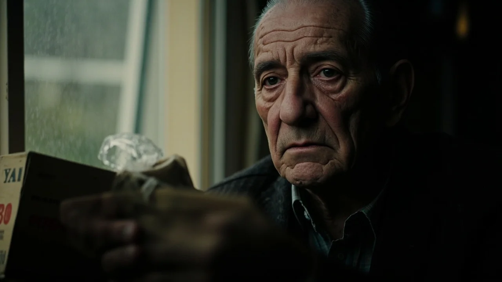
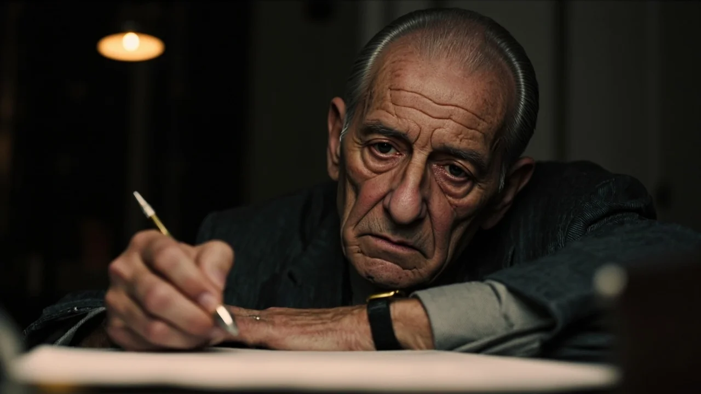
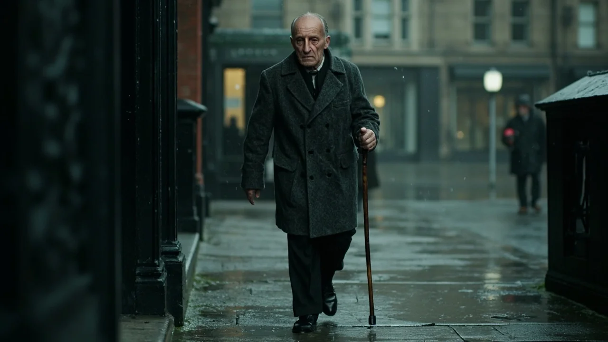
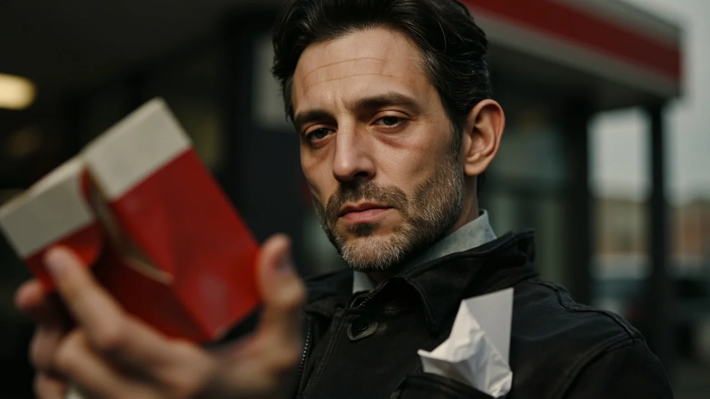
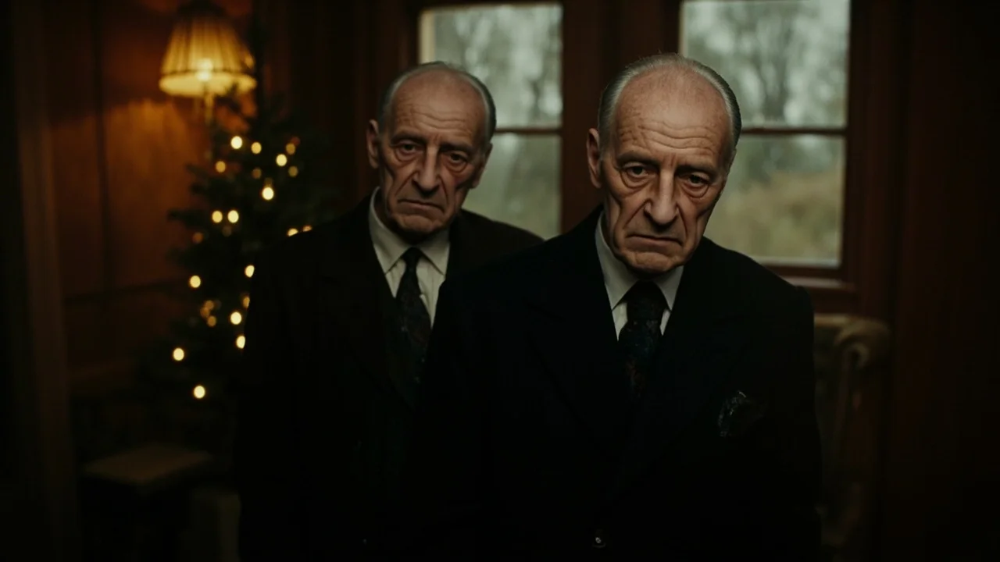

El polvo de las ramas artificiales desprendía un olor seco a trastero y a plástico rancio. A sus setenta y ocho años, encajar el tronco de alambre en la peana le costaba dos paradas para recobrar el aliento sobre las baldosas frías del salón. No ponía el árbol por fiesta; lo hacía por una inercia sorda que se negaba a claudicar. Junto a la ventana que daba al callejón, sacó de la bolsa de tela la caja de cartón recio, marca Segarra, atada con una goma gastada.
Dentro descansaban catorce cuartillas dobladas en cuatro pliegues y una fotografía en alpaca. Carmen sonreía en un banco de piedra con el pelo revuelto por el viento de la sierra. A su lado, Daniel miraba al objetivo con dieciocho años y esa seguridad limpia de quien ignora con qué facilidad puede quebrarse una familia. Antonio pasó el pulgar por el vidrio antes de apoyarlo bajo las ramas bajas.
Alineó los sobres en la mesa camilla. Llevaban la caligrafía cuadrada que perfeccionó anotando albaranes de tornillería en su ferretería. Peticiones banales escritas cada veinticuatro de diciembre a lo largo de quince años: una bufanda gorda, jabón de afeitar con aroma a lavanda, una lima de mano. Pero al pie de cada una, con trazo tembloroso, repetía la misma súplica invariable: «Que vuelva Daniel». Guardó las cartas, encajó la tapa y empujó la caja bajo el faldón del árbol.
La advertencia llegó un martes de niebla, al regresar de la panadería con una hogaza de pueblo bajo el brazo. Antonio sintió un vacío repentino en el estómago, las rodillas se le aflojaron y el mundo entero giró en negro hasta dar contra el marco de granito del portal. Despertó en el ambulatorio, con el doctor Salas auscultándole el pecho con el fonendoscopio frío a través de la camiseta interior.
—La tensión le ha dado un aviso serio, Antonio —dijo el médico, quitándose el aparato de las orejas—. El corazón está cansado. No pase las fiestas solo en cuatro habitaciones. Avise a su hijo.
—Daniel tiene trabajo en la capital —mintió Antonio, abotonándose la camisa de franela—. Anda de giras y grabaciones. Ya me apaño con la compra.
Al volver a casa, el silencio le cayó encima como una losa de cantera. Se detuvo en el pasillo oscuro frente al teléfono negro clavado en la pared. Tenía el número de Daniel en una libreta roja. Levantó el auricular; el tono zumbó, monótono y frío. Con el índice vacilante fue introduciendo el disco: nueve cifras marcadas con un chasquido metálico que le aceleraba el pulso hasta dolerle en las sienes.

Sonó el primer timbre lejano. Una pausa honda como una sima. Luego el segundo, limpio y distante. La garganta se le cerró por completo; el orgullo viejo y el pavor a escuchar un rechazo tajante le paralizaron la lengua. Antes de la tercera señal, colgó de golpe el auricular y se quedó mirando el aparato en la penumbra.
Aquella noche, junto a la estufa de butano, Antonio cogió una cuartilla limpia y el bolígrafo del aparador. Por primera vez en quince inviernos no escribió una lista de regalos absurdos. Apoyó los codos en el hule de la mesa y dejó salir la verdad.
Escribió que el negocio que levantó cargando sacos de yeso a las seis de la mañana nunca debió ser una cárcel para nadie. Reconoció que cuando Daniel anunció que se marchaba a la academia de música, no fue la decepción comercial lo que le hizo gritar que no volviera esperando encontrar un padre, sino el terror cobarde a quedarse solo. Confesó que confundió la autoridad con el amor y que obligó a su familia a pagar una deuda no firmada. Se avergonzaba de haber necesitado perder a Carmen para comprender que una casa sin afecto es solo un montón de ladrillos viejos.
Al terminar, con la mano entumecida por el frío, leyó sus palabras con un nudo amargo en el paladar. La carta desnudaba su orgullo, pero el miedo a que Daniel la tomara como un chantaje de viejo enfermo le atenazó los dedos. «Pensará que le pido que vuelva para cuidarme», se dijo con amargura. Dobló el folio, se levantó con esfuerzo y metió la decimoquinta cuartilla en el fondo de la caja Segarra, sepultándola bajo las demás.
La tarde del veinte de diciembre, unos golpes secos en la puerta rompieron el letargo del piso. Al abrir, Antonio encontró a Sofía, la vecina de nueve años del tercero derecha, envuelta en un anorak azul marino con una tartera humeante de arroz con leche.
—Mi madre dice que se tome la mitad antes de que enfríe —soltó la niña entrando sin esperar invitación—. Y si no ha puesto las luces del árbol, le ayudo yo, que hoy no tengo deberes de sociales.

Fue al salón y empezó a ordenar bolas doradas sobre la alfombra. Al agacharse para colocar el nacimiento de barro bajo las ramas, tropezó con la caja de zapatos. Levantó la tapa y vio los sobres amarillentos alineados como tejas.
—Don Antonio, ¿por qué tiene tantas cartas para Papá Noel aquí guardadas? —preguntó Sofía con curiosidad—. Tienen su nombre, pero no llevan sello ni las ha echado al buzón. ¿Es que no se fía de los renos?
El anciano carraspeó desde el sillón orejero con la manta sobre las piernas:
—Son cosas de viejos, menuda. Peticiones que uno hace por costumbre, pero que no hace falta mandar a ninguna parte. Hay asuntos que pesan demasiado para decirlos en voz alta.
Sofía dejó los sobres sobre el faldón. Lo miró fijamente con esos ojos oscuros y serios de quien conoce el vacío en casa:
—Mi padre se murió cuando yo tenía cuatro años —dijo la niña con una serenidad que heló a Antonio—. Mi madre dice que se acuerda de él a diario, pero yo casi no me acuerdo de su voz. Lo peor de echar de menos a alguien no es que no entre por la puerta, don Antonio; es no saber si esa persona sabía de verdad cuánto la querías antes de marcharse.
La frase resonó en el comedor con la fuerza de un aldabonazo. Tras marcharse la niña con un portazo alegre, Antonio no encendió las luces. Se levantó, sacó la carta de la noche anterior, la metió en un sobre blanco y escribió la dirección del estudio de Daniel en la capital con tinta indeleble.

Amaneció el veintiuno con aguanieve sobre las farolas de la avenida. Antonio no esperó a que escampara. Calzado con zapatillas de goma y abrochado el gabán de espiga, salió a la calle apoyándose en el bastón de nogal. El aire gélido le mordía la nariz, pero apretó el paso sin mirar los escaparates iluminados.
Llegó a la oficina de Correos del barrio y esperó su turno ante el mostrador de madera envejecida. El empleado pesó la carta en la balanza.
—Dos con cuarenta, caballero —dijo el muchacho, extendiéndole un sello rojo con una rama de acebo.
Antonio humedeció el reverso y lo fijó en la esquina superior. Sostuvo el sobre entre sus dedos nudosas un instante largo, sintiendo el papel doblado contra sus yemas gastadas. El chico lo miró extrañado al ver que no lo soltaba:
—¿Pasa algo con el envío, señor?
—No, hijo. Nada —respondió Antonio con voz firme—. Es solo que lleva quince años de retraso.
Soltó la carta en la ranura metálica del buzón. El golpe sordo del sobre contra la lona marcó un corte definitivo. Al salir de nuevo a la acera mojada, comprendió una verdad elemental y tardía: pedir perdón no garantizaba que Daniel volviera, pero callar era cavar su propia tumba en vida.

La tarde del veinticuatro, la ciudad se recogió bajo una lluvia constante que batía contra las persianas. En la cocina, Antonio puso a hervir una cazuela con patatas y una rodaja de merluza. Cortó tres lonchas de turrón de almendra en un plato de postre con filo dorado.
Por inercia de medio siglo, sacó dos platos y dos juegos de cubiertos. Los colocó frente a frente en la mesa camilla sobre el mantel verde. Se quedó de pie en mitad del salón, contemplando el servicio vacío bajo la bombilla amarilla. Negó con la cabeza, retiró despacio el segundo plato, guardó los cubiertos y cerró la alacena sin hacer ruido. «No seas necio, Antonio. Las cosas rotas no se sueldan con deseos de viejo», murmuró.
Cenó despacio mientras el reloj de pared marcaba las nueve y media con su balanceo monótono. Al terminar, lavó la cazuela y tomó la pastilla de la tensión con medio vaso de agua. A las diez menos diez apagó la estufa para irse a la cama.
En ese instante, seco y desacostumbrado tras años de mutismo, el timbre del telefonillo sonó en la entrada.
Antonio se quedó inmóvil en el pasillo, conteniendo la respiración. El timbre repitió dos toques impacientes. Se acercó arrastrando los pies y descolgó sin atreverse a hablar.
—¿Papá? —llegó una voz rota desde el altavoz, entrecortada por el agua de la calle—. Abre, por favor. Hace un frío tremendo aquí abajo.
Tardó tres intentos en acertar con el botón del portero. Dejó la puerta abierta y esperó en el descansillo, agarrado al marco de madera para sostener el temblor de las piernas. Los pasos subiendo de tres en tres resonaron en la escalera hasta que una figura empapada asomó por el tramo final.

Era Daniel. Cuarenta y un años cumplidos, el pelo oscuro pegado a la frente por el agua, ojeras profundas de carretera y una bufanda granate sobre la cazadora de cuero gastada. Traía una caja de mazapanes de gasolinera en la mano y en el bolsillo asomaba el sobre blanco que Antonio había enviado.
Padre e hijo se miraron a dos metros, en la penumbra del rellano, incapaces de salvar quince años con un gesto sencillo. Antonio intentó hablar, pero la voz se le quebró en un sollozo áspero y dos lágrimas calientes le surcaron las mejillas sin que pudiera disimularlas.
Daniel soltó la caja en el suelo, avanzó dos pasos y le puso las manos sobre los hombros mojados:
—No digas nada ahora, papá —susurró apretándole los brazos con firmeza—. He tardado demasiado en entender la carta. Pasa adentro, que te vas a helar.
La cafetera empezó a gorgotear en los fogones mientras el vapor empañaba los azulejos blancos de la cocina. No hubo reconciliaciones teatrales ni abrazos solemnes; las ausencias largas dejan cicatrices duras para disolverse en un brindis. Pero se sentaron a la mesa camilla y hablaron de Carmen. Recordaron cómo insistía en fregar con agua hirviendo y las tardes en la huerta. También hablaron de los meses silenciosos en que la enfermedad fue apagándole la mirada, sin que Daniel encontrara valor para presentarse por miedo al rechazo de su padre.
—Pensé que ya no me necesitabas —confesó Daniel, removiendo el café con la cucharilla—. Me convencí de que estabas mejor sin un hijo que no quiso seguir tu oficio en la ferretería.
—Fui un necio engreído —respondió Antonio, apoyando los dedos sobre la mesa—. El negocio era mi orgullo, pero tú eras mi vida. Me costó quince años de soledad entender que la vida de un hijo no se hereda; se respeta.
Cerca de medianoche, Daniel fue al salón en penumbra. Al ver el árbol encendido, descubrió la caja de zapatos Segarra junto a la foto de alpaca. Sacó las cartas amarillentas. Leyó la primera en silencio, aquella escrita cuando tenía veintiséis años, donde su padre pedía un pañuelo de seda y suplicaba que volviera, aunque solo fuera para decirle a la cara que no pensaba regresar jamás.
Daniel dobló el papel despacio, lo dejó junto al retrato de su madre y se volvió hacia Antonio, que lo observaba desde el umbral con el paño de cocina entre las manos. Su hijo se acercó sin prisas y lo rodeó con los brazos, apoyando la barbilla sobre la coronilla blanca del anciano. Sintió la fragilidad de sus costillas viejas y el temblor contenido de su respiración.
—No puedo quedarme a vivir aquí, papá —dijo Daniel con voz suave, mirándolo a los ojos—. Mañana tengo ensayos del concierto de Año Nuevo. Pero el domingo que viene bajo a comer contigo. Y el siguiente también.
Antonio asintió en silencio, apretando la cazadora de cuero de su hijo contra el pecho. Para un hombre que había aprendido tarde que el amor verdadero no exige contratos ni garantías eternas, la certeza de aquel próximo domingo era el mejor regalo de su vida.